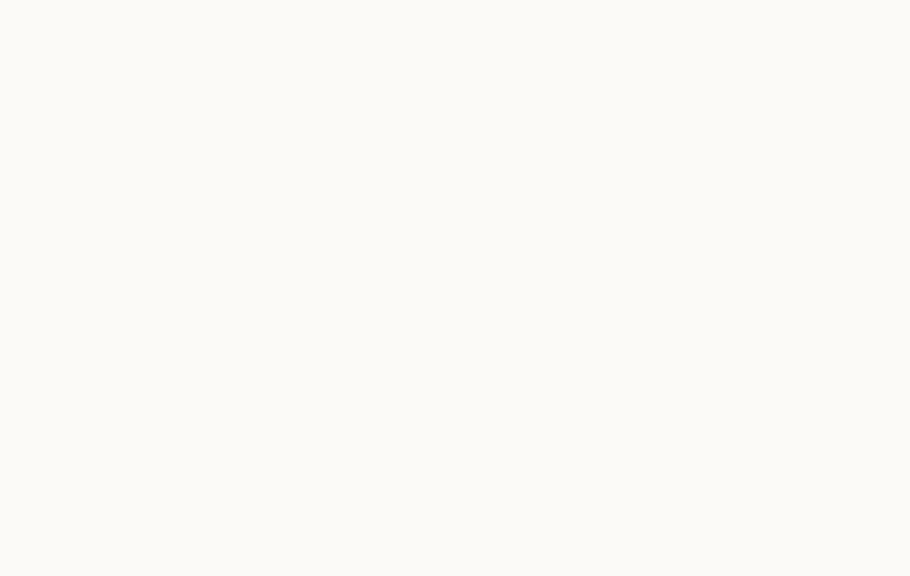

Powered by zerolovesea
所有会议
Powered by zerolovesea
v—
文
中文
English
Español
日本語
한국어
Français
Deutsch
Русский
◐
会议库
每一场对话，都留有依据。
⌕
全选
← 返回会议库
准备录制
开始一场会议
会议名称
录制音频
我的麦克风
系统默认麦克风
输入良好
系统音频
需要授予屏幕与系统音频权限
已就绪
开始录制
→
会议
正在录制
00:00:00
已保存
字幕
译文: 关
Ⅱ 暂停
结束会议
我的笔记
✦
AI 辅助
请求建议
展开字幕
→
实时字幕
返回笔记
←
↓
回到最新
← 返回会议库
本地会议
会议详情
分享
导出
↓
▶
↶ 15
15 ↷
00:00
本地录音
1×
⌄
1×
1.25×
1.5×
2×
← 返回会议库
设置
模型与本地数据